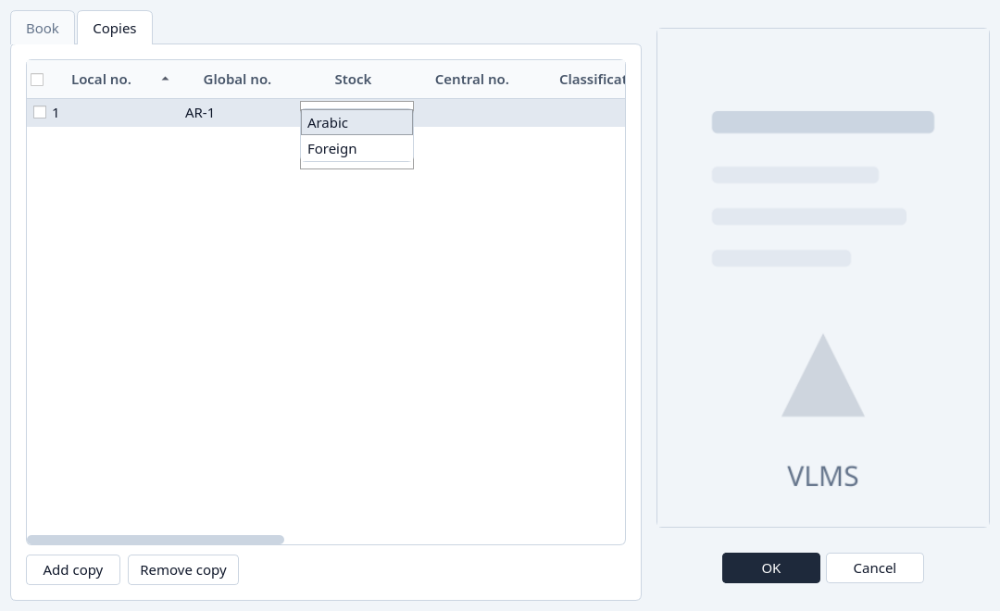
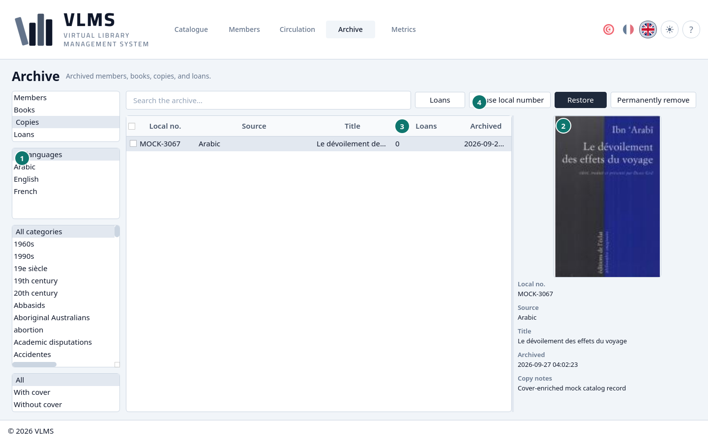
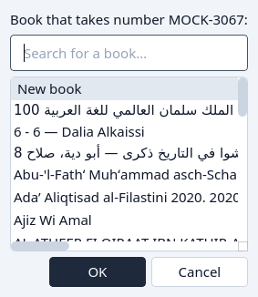
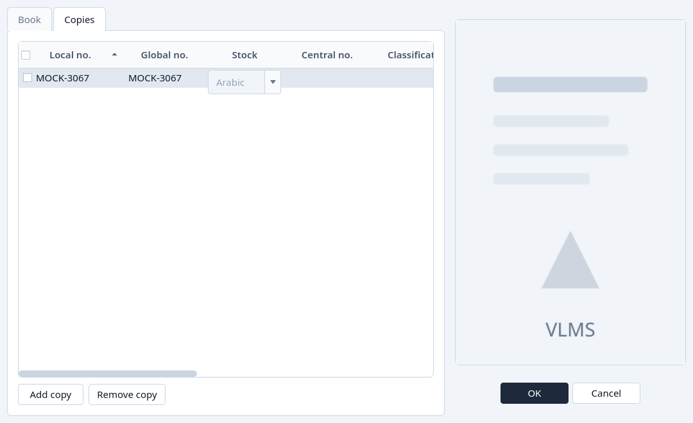

Reuse a local number
Take the next number, a free gap, or a number from the Archive.
A local number belongs to one live copy of a stock. When a copy is archived, its number stays on that copy until you give it to another. Gaps left by older numbers are free, but the application never picks a gap for you. It offers the next number first.
On a new copy
Open the Copies tab and click Add copy.
The new line's local number opens on the next number. The free numbers are in the same list, behind it. They are used only if you pick one.

The next number, with the free numbers under it. Leave the next number, or pick a free one, then OK.

This is the same dialog as Add a book.
From the Archive
A number that still sits on an archived copy is reused from the Archive, not typed over a live copy.
Open Archive, choose Copies, and highlight the copy whose number you want.
Reuse local number is available when that copy still has a local number. The Loans column does not have to be zero for reuse. It does for permanent removal.

Archived copies, with Reuse local number. Click Reuse local number and choose the title.
The first line starts a new book. The lines under it are live titles of the same stock. Search if you need a particular one.

Choose a new book or an existing title for the number. Confirm with OK. The editor opens with the number locked on a copy line.
On a new book, fill the title and the language, then OK. On an existing book, OK adds the copy. Cancel leaves the archived copy holding its number.

The editor opened by reuse. The Copies tab already holds the number.


The number is released only when that save succeeds. A refused save, or Cancel, leaves the Archive as it was.